Sangue 2018
Red Wine, aged since 2018 in a mix of Syrah and Cabernet Sauvignon. Structured, savory, built to age a decade.
Choueir, Lebanon · Est. 2016
From our hillside in Choueir to your glass — every bottle at Greppo Propria carries the sun, the stone and the patience of the Jerdak family.
Reserve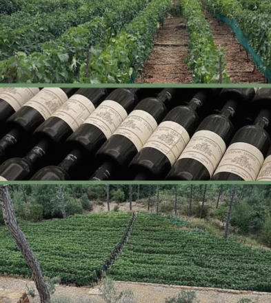
The Propria, seen from the lower vineyardOur Story
Greppo Propria was planted by Hisham Jerdak in 2016, on a south-facing hillside his own.The Jerdak family still lives on the estate — and still believes that hospitality and winemaking are the same craft, practiced twice a day.
What began as a modest land has become one of Choueir's most quietly celebrated estates: a working vineyard, a Michelin-inspired table, and a home for the kind of gatherings — weddings, harvest dinners, long August afternoons by the pool — that people remember for the rest of their lives.
The Estate
Meters under vine
Individual vines
Grape varieties
Year founded
Bottles produced annually
Certified sustainable
The Vineyard Tour
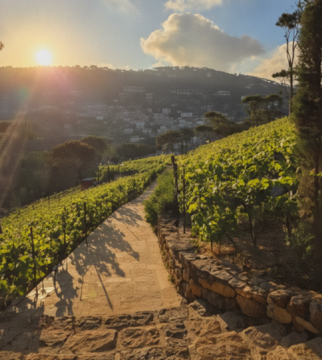
South-facing terraces, planted in 2016Every parcel at Greppo Propria faces south or south-west, catching the full arc of Choueir's and Ain Al Sendianeh's sun. The Mediterranean climate — hot, dry summers, mild winters — is exactly what Sangiovese and its neighboring varieties were bred for.
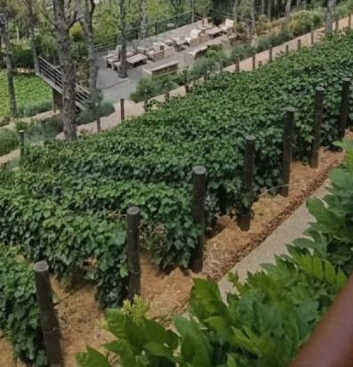
1.2 metres between vines, by designVines are trained 1.2 metres apart in narrow rows, forcing roots to compete and dig deep for the estate's mineral — the single biggest reason our fruit tastes the way it does.
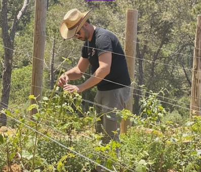
Hand-picked, basket by basketEvery cluster at Greppo Propria is still picked by hand, into 15kg crates, usually before nine in the morning while the fruit is cool. Nothing is mechanically harvested — nothing rushed.
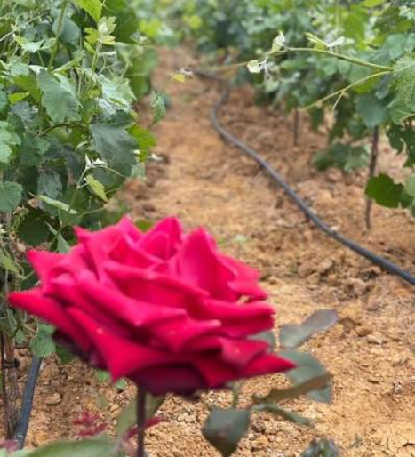
Certified organic since 2009No synthetic pesticides or herbicides have touched these hills since 2009. Cover crops, sheep and hand-hoeing do the work chemistry used to — slower, but it shows in the glass.
House Wines
Red Wine, aged since 2018 in a mix of Syrah and Cabernet Sauvignon. Structured, savory, built to age a decade.

Red Wine, aged since 2017 in a mix of Syrah and Cabernet Sauvignon. Structured, savory, built to age a decade.

Red Wine, aged since 2016 in a mix of Syrah and Cabernet Sauvignon. Structured, savory, built to age a decade.
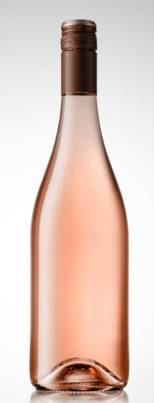
The dry Rosé blends Syrah and Cabernet Sauvignon. Fermented at cool tempretures to retain the ultimate purity of the fruit, it reveals a round profile of red berries uplifted by a floral touch.
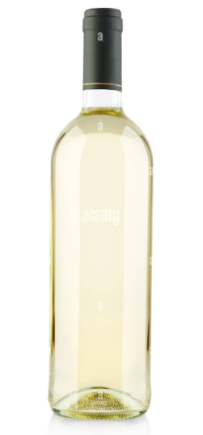
A pure and vibrant White wine, this balanced blend of Sauvignon Blanc and Viognier is softly pressed and aged on fine lees to preserve its natural briliance.
The Wine Cellar
Our cellar holds constant conditions the family has never needed machinery to achieve: 14°C, 75% humidity, total darkness, all year round.

La Tavola
Michelin-inspired Tuscan cuisine, served where the wine is made — never more than above the cellar.
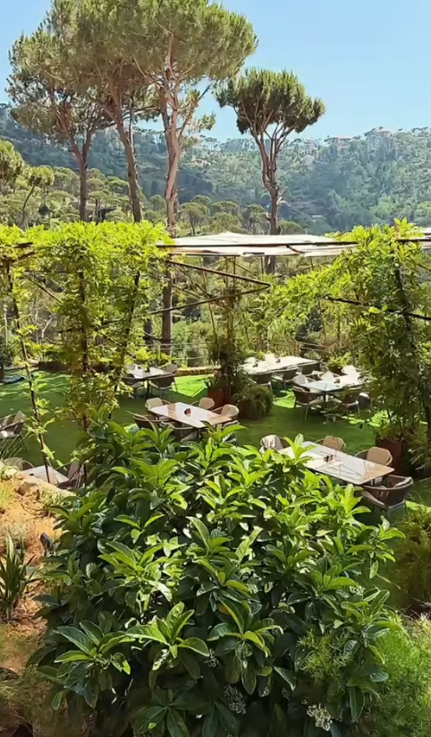
Parma, risotto al limoni, tagliere magnum
Every menu paired glass by glass with estate wines
The Propria Room, seating up to 20 guests
Stone terrace overlooking the lower vineyard
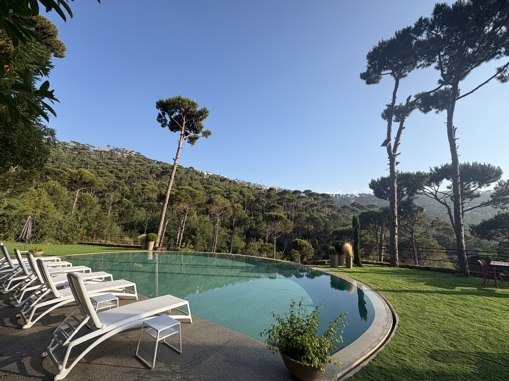
The Infinity Pool
The pool's edge was cut to disappear exactly at the horizon line of the valley — a small piece of engineering that took one very patient stonemason to get right.
St Elias
A small stone chapel, deconsecrated in the 2016s and gently restored, stands at the most gorgeous point of the estate. Private vows are still exchanged here, with every row of vines visible from the chapel steps.
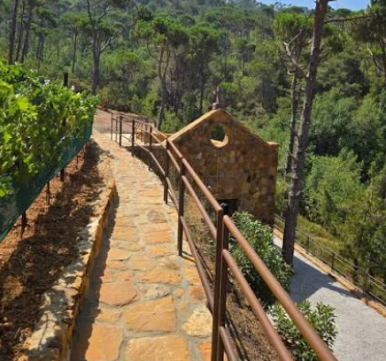
St Elias , above the vineyardPrivate area

The Propria Room and conference terrace, reserved for the day.
Guided flights through every vintage in the library.
Private dining or courtyard receptions, any size.
A table set anywhere on the estate you choose.
A quiet, well-lit room for up to 30, cellar included.
Every event at Greppo Propria is quoted individually.
Request PricingFind Your Way
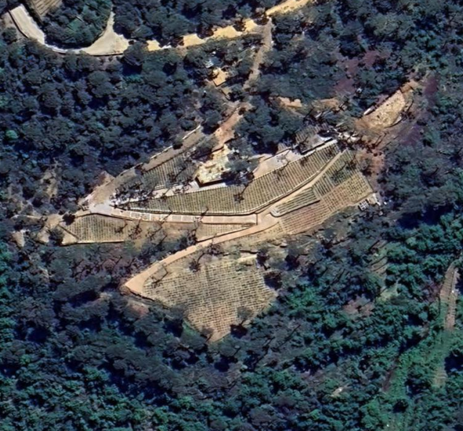
Tap a marker to see what's there
Reserve
Tell us what brings you to Greppo Propria, and someone from the estate will write back within a day — usually sooner.